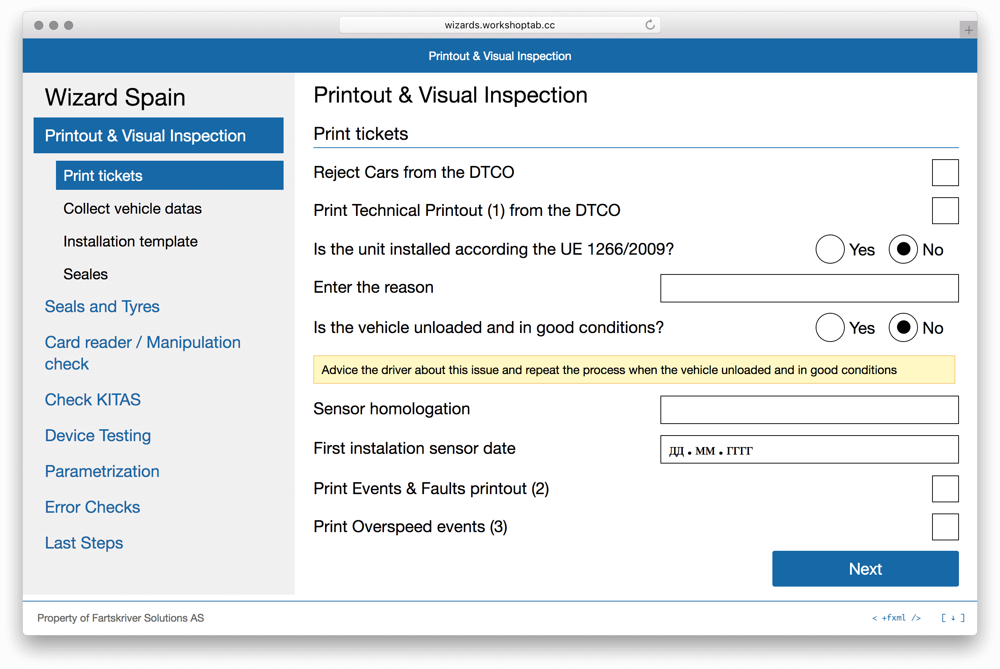
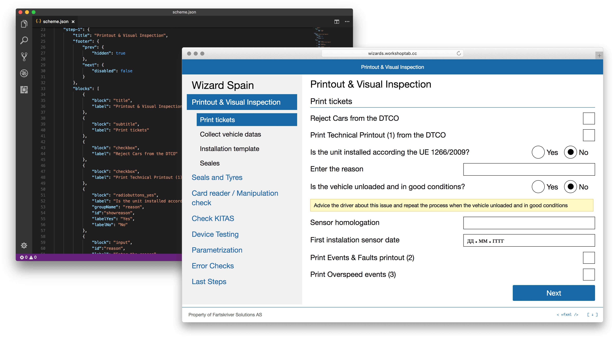
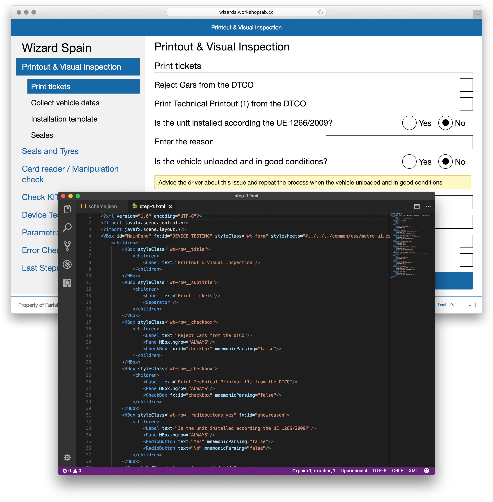
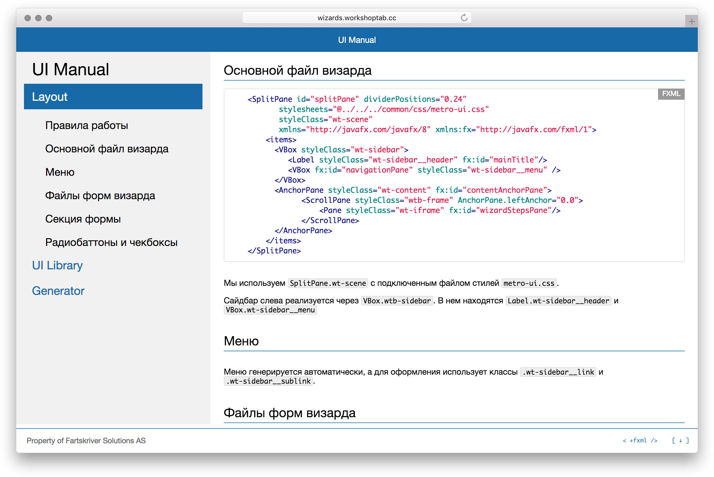

Вокршоптаб Визард проводит проверку грузовых машин с помощью цифрового тахографа и блютус-передатчика СмартЛинк.
C интерфейсом визарда удобно работать механику в гараже. Крупный шрифт и элементы интерфейса чётко различимы при недостаточной освещённости и удобны для попадания пальцами.
Разработанная система интерфейса Визарда помогает унифицировать внешний вид экранов и упростить внесение визуальных изменений в проект без привлечения разработчиков.
Генератор страниц форм Визарда позволяет менеджерам быстро создавать прототипы страниц и согласовывать их с клиентами.
Экспортёр fxml-лэйаутов из генератора облегчает жизнь разработчикам. Они могут скачать нужный экран и работать над кодом приложения, а не вёрсткой.
Библиотека элементов и код-стайл помогают разработчикам писать код легко.
